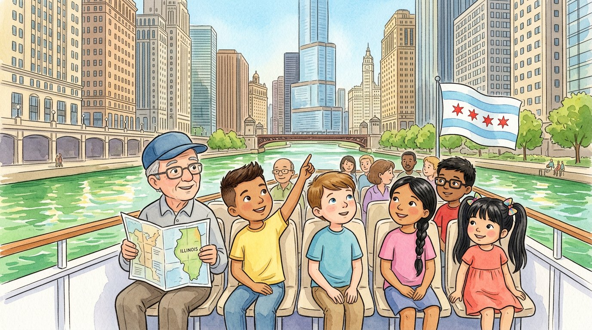

3er grado · Estudios sociales · SS.CV · SS.G · SS.EC · SS.H
El paseo en barco por Chicago
Un cuento para repasar lo que aprendimos de nuestra comunidad.
Palabras de estudios sociales que vas a aprender
Toca una palabra verde para ver qué significa.
El cuento
Para despedir el año escolar, el bisabuelo invitó a todos los primos a un paseo en barco por el río Chicago. Alejandro vino desde Texas, y hasta Adrián y Génesis se pusieron su gorra de marineros.
Al pasar junto al Ayuntamiento, Israel recordó la carta del bache. —Ahí trabaja el de la ciudad —dijo—: con los impuestos da servicios como escuelas, parques y bomberos. Y el gobernador trabaja en Springfield, la capital.
En el barco había un letrero: «Prohibido tirar basura al río». —Es una —explicó Lucía—: una regla que hace el gobierno para protegernos a todos, y si no se cumple, hay consecuencias.
Pasaron frente a un centro comunitario. —Ahí ayudan —dijo Adrián, muy orgulloso—, como nosotros en el banco de comida. Génesis aplaudió.
Alejandro desdobló un de Illinois. —El río Chicago antes corría hacia el lago —dijo—, pero en 1900 la gente lo hizo correr al revés con un canal. ¡Las personas modifican el ambiente!
En la orilla, un barco descargaba cajas de fruta. —Esa fruta viene de otros países —dijo Israel—: Chicago la . Y Illinois exporta maíz y soya a todo el mundo.
—Yo compré mi bicicleta con ahorros y un de la abuela —contó Alejandro—, y ya lo pagué todo. Los primos lo felicitaron.
Al final, el barco pasó cerca de donde comenzó el Gran Incendio. El bisabuelo señaló la bandera de Chicago. —Una de esas estrellas rojas recuerda el incendio de 1871 —dijo—. Y lo sabemos por las : cartas, fotos y periódicos de aquella época. Los historiadores las comparan, porque hasta una fuente primaria puede tener errores. ¿Y la vaca? Nadie pudo demostrar que fuera culpa suya, pero eso no nos dice cómo empezó el incendio. Todavía no lo sabemos con exactitud.
Todos se rieron. Mientras el sol se ponía entre los rascacielos, Israel pensó que su ciudad tenía una historia larguísima… y que ellos, ahora, también eran parte de ella.
Glosario
- gobierno
- El grupo de personas que organiza y dirige una ciudad, un estado o un país.
- ley
- Una regla que hace el gobierno y que todas las personas de un lugar deben cumplir.
- voluntario
- Una persona que ayuda sin recibir pago.
- mapa
- Un dibujo de un lugar visto desde arriba que muestra dónde están las cosas.
- importar
- Comprar productos que se hicieron en otro país.
- préstamo
- Dinero o algo de valor que alguien te da ahora y que prometes devolver después.
- fuente primaria
- Una fuente hecha por una persona que vivió el suceso, como una carta, un diario o una foto de esa época.
Preguntas
Elige la respuesta correcta. Si te equivocas, el cuento te muestra dónde está la respuesta.
-
Pregunta A. ¿Con qué paga el gobierno de la ciudad servicios como escuelas y parques?
El gobierno de la ciudad da servicios con el dinero de los impuestos.
-
Pregunta B. ¿Qué es una ley?
Una ley es una regla que hace el gobierno para protegernos a todos.
-
Pregunta C. ¿Quiénes ayudan en el centro comunitario sin recibir pago?
En el centro comunitario ayudan voluntarios, personas que no reciben pago.
-
Pregunta D. ¿Qué hicieron las personas con el río Chicago en 1900?
En 1900, la gente hizo correr el río al revés con un canal: así modificaron el ambiente.
-
Pregunta E. ¿Cómo sabemos lo que pasó en el Gran Incendio?
Lo sabemos por las fuentes primarias, como cartas, fotos y periódicos de aquella época. Los historiadores las comparan, porque hasta una fuente primaria puede tener errores.